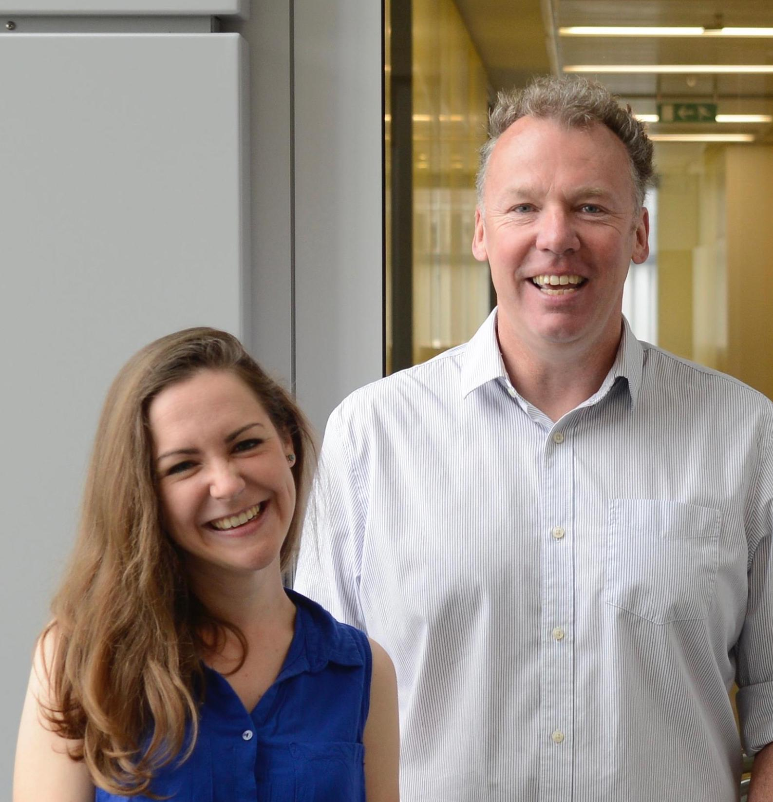

Michaelmas
-
30th Oct
7pm
Samuel Marguerat – Gene Expression Control of Cell Size
Dr Marguerat is heading an interdisciplinary team at the MRC LMS in London which uses the fission yeast Schizosaccharomyces pombe as its main model system combining –omics, imaging and computational approaches to study gene expression variability in cell population and single cells. His team is particularly interested in
i) deciphering how global variations in mRNA and protein numbers resulting from fluctuations in growth dynamics and cell size affect gene expression networks
ii) understanding the molecular mechanisms that underlie scaling of transcriptional rates with cell size.
-
8th Nov
6:30pm
Ben Whitaker – Molecular Reaction Dynamics
"In quantum mechanics a superposition state describes the fanciful proposition that something can be in more than one place at the same time. This seemed a good description for the Arts, Science, Maker collective that grew out of a piece of installation art, commission by the Spectroscopy and Dynamics group of the RSC, called “Phase Revival: An Optical Harmonica”.
"In my talk I will describe the scientific and artistic inspiration behind Phase Revival and how the collaboration between artists, scientists and makers it fostered have led to other things – see thesuperposition.com for more information."
-
15th Nov
7pm
 David Carling – Enzyme (AMPK) regulation of cell fuel
After completing a BSc in Biochemistry at Bristol University and a PhD at Dundee University, David Carling moved to the MRC London Institute of Medical Sciences, Imperial College where he continues to lead a research group focussed on studying the role of the AMP-activated protein kinase cascade in the regulation of metabolism. AMPK is now recognised as a key regulator of metabolism controlling both anabolic and catabolic pathways, and has attracted widespread interest as a potential therapeutic target for metabolic diseases. Work in the Carling group has uncovered important insights into the mechanism of activation of AMPK, and more recently the group has generated a gain-of-function mouse model that provides an opportunity to explore the physiological role of AMPK.
More info on his lab -
22nd Nov
6:30pm
Peter Sarre – Astrochemistry and Molecular Physics
The Large-Molecule Universe: Flat or Curved?
"Spectroscopy is key to our understanding of the chemistry and physics of interstellar clouds and circumstellar regions of space. Ground and space-based telescope observations, taken in combination with laboratory experiments and theoretical studies, have revealed that very large molecules - including graphene-like polycyclic aromatic hydrocarbons and the fullerene C60 - are important components of our Universe.
"In this talk I’ll describe some of the astronomical objects studied, how observations are made, how these have stimulated laboratory experiments (and vice-versa), and how recent discoveries have accelerated research in this exciting area of astrochemistry."
-
22nd Jan
7pm
Lee Cronin – TBC